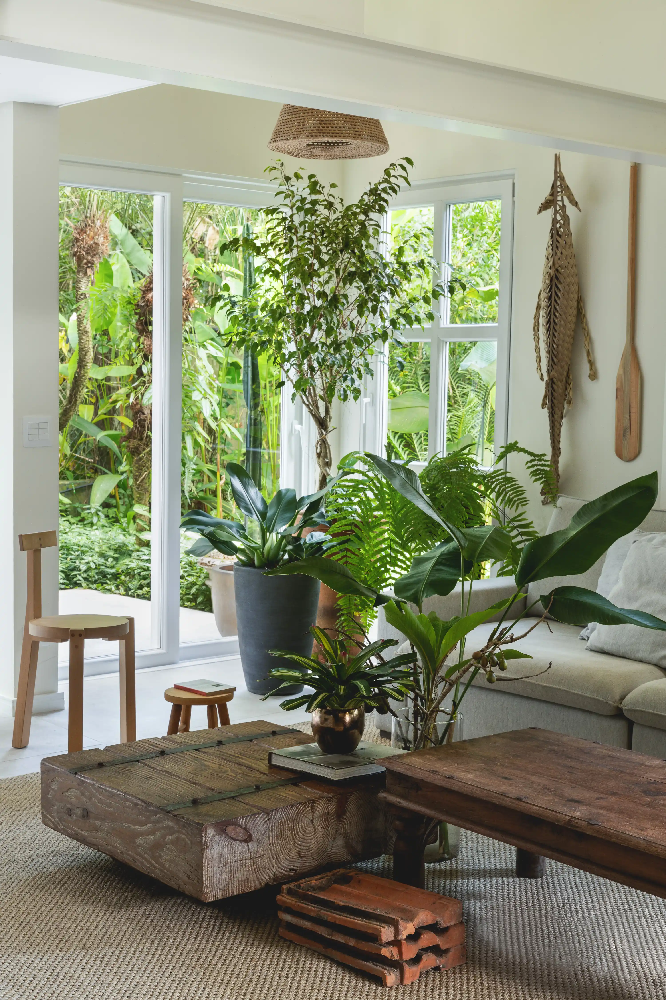

Plantas na Decoração

As plantas são excelentes elementos decorativos e ajudam a tornar os ambientes mais vivos e acolhedores.
Algumas espécies populares são a jiboia, a zamioculca e a espada-de-são-jorge, pois exigem poucos cuidados e se adaptam bem a ambientes internos.
Além da beleza estética, as plantas proporcionam sensação de bem-estar e contato com a natureza.